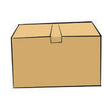
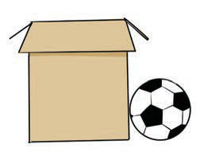

Unit Three
Describing locations and giving directions
Think about the words you use to tell where something or someone is located.
Describing locations of objects using ‘between’ and ‘beside’
Look at the pictures and read sentences below them.
1

left box
ball
right box
The ball is between the boxes.
2

The ball is beside the box.